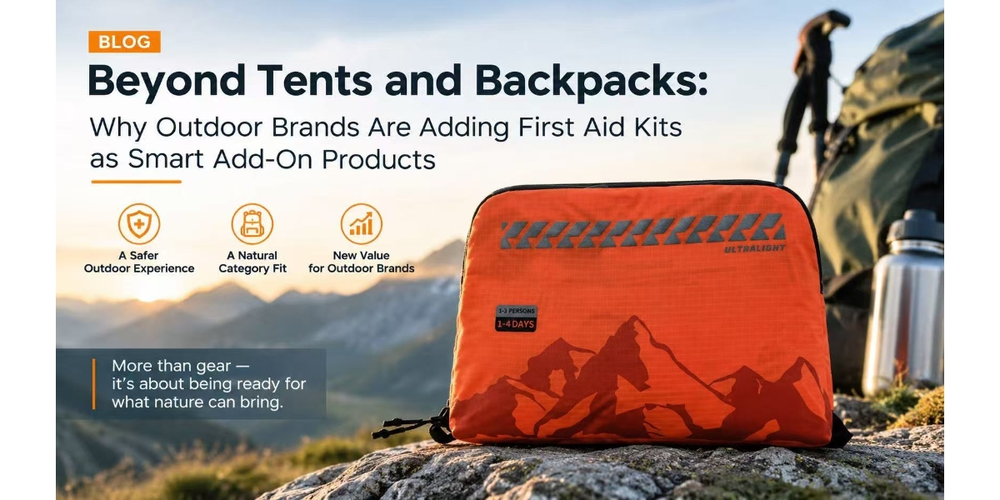

Beyond Tents and Backpacks: Why Outdoor Brands Are Adding First Aid Kits as Smart Add-On Products
AUG 15, 2026

For many outdoor brands, increasing sales usually means adding more products.
A new backpack collection.
More apparel choices.
More camping accessories.
More technical equipment.
But there is another approach that some outdoor retailers are starting to explore:
Adding a small but highly relevant safety product category that naturally fits into existing customer journeys.
First aid kits are one example.
They do not replace tents, backpacks, sleeping bags, or outdoor equipment. Instead, they complete the outdoor experience by helping customers prepare for the situations they hope never happen.
For outdoor retailers, the question is not:“Do we want to become a medical supplier?”
The better question is:“Can a simple first aid range provide additional value to our existing outdoor customers?”
The Challenge: Adding New Products Without Creating More Complexity
Outdoor retail is already a highly competitive category.
Brands and retailers often manage hundreds of SKUs across:
- tents
- backpacks
- clothing
- footwear
- cooking equipment
- camping accessories
Every additional product category creates new considerations:
- Will customers understand the product?
- Will our sales team know how to position it?
- Will it create inventory pressure?
- Does it fit our existing brand image?
This is why many retailers hesitate before entering categories outside their traditional product range.
The problem is not always product quality.
The problem is whether the product has a clear connection with the customer’s existing purchase decision.
This is where outdoor first aid kits are different.
First Aid Kits Are Not a Separate Category — They Are Part of Outdoor Preparedness
A customer preparing for a weekend adventure is already thinking about risk.
They may ask:
- What happens if someone gets injured on the trail?
- What if medical assistance is far away?
- What should we carry for a family camping trip?
- Are we prepared for longer remote travel?
The first aid kit is not an unrelated purchase.
It belongs to the same conversation as:
- navigation equipment
- emergency communication devices
- lighting
- survival accessories
The role of the retailer is not simply selling a bag of medical supplies.
The role is helping customers prepare for the environment they are entering.
A Simple Three-Level Range Can Cover Different Outdoor Customers
One challenge outdoor retailers often face is deciding:
“How many first aid products should we introduce?”
Too many choices create confusion.
Too few choices may not match different customer needs.
A practical approach is to create a simple range based on activity level.
For example:
MINI — For Day Hikes and Casual Outdoor Activities
This type of kit is suitable for customers who spend a few hours outdoors or participate in lower-risk activities.
Typical users include:
- day hikers
- casual campers
- families exploring local outdoor areas
The purchase decision is simple:
“I want something small and practical to carry.”
STANDARD — For Family Camping, Caravans, and Weekend Adventures
As outdoor activities become longer and involve more people, customer expectations change.
A family camping trip or caravan journey creates different preparation needs compared with a short hike.
Customers may need a more comprehensive solution for:
- family travel
- camping groups
- vehicle-based adventures
This type of product fits naturally alongside:
- camping equipment
- caravan accessories
- outdoor travel products
PLUS — For Overlanding, Remote Travel, and Extended Trips
Remote adventures create a different purchasing mindset.
Customers traveling further away from immediate medical support often think differently about preparedness.
For:
- overlanding
- remote travel
- extended outdoor journeys
a larger and more capable first aid solution becomes part of overall trip planning.
The Commercial Opportunity: Three SKUs, Multiple Customer Conversations
For outdoor retailers, one of the biggest advantages of a structured first aid range is simplicity.
Instead of introducing a large medical category, retailers can start with a focused selection.
Three products can support three customer conversations:
“Going for a short hike?”
→ MINI
“Taking the family camping?”
→ STANDARD
“Heading somewhere remote?”
→ PLUS
This makes it easier for sales teams and customers to understand.
The product does not compete with the main outdoor purchase.
It supports it.
Why Small Accessories Can Increase Order Value
Outdoor brands often focus on high-value products:
- tents
- backpacks
- jackets
- technical equipment
These products are essential, but they are also highly competitive.
Accessories can play a different role.
A customer purchasing a tent may not immediately buy another large product.
However, a relevant safety accessory can become an easy addition before checkout.
This is especially valuable for online retailers.
A well-positioned first aid kit can become:
- a recommended accessory
- a camping bundle component
- an adventure preparation item
The goal is not to replace core outdoor products.
It is to complete the purchase journey.
What Outdoor Brands Should Consider Before Adding First Aid Kits
Before selecting a supplier, retailers should evaluate more than just product price.
Important questions include:
1. Does the product match our customer segments?
A hiking customer and an overlanding customer have different expectations.
A single “one-size-fits-all” kit may not communicate value clearly.
2. Can the supplier support different market positioning?
The product should be easy to explain.
Retailers need more than a product photo.
They need:
- clear product positioning
- usage scenarios
- customer guidance
3. Can we test the market without high inventory risk?
For many brands, the first step is not a large commitment.
A simple range allows retailers to understand customer response before expanding further.
Final Thoughts
Outdoor customers are not only buying equipment.
They are buying confidence.
They want to enjoy the journey while knowing they are better prepared for unexpected situations.
For outdoor brands and retailers, first aid kits represent an opportunity to add value without creating an entirely new product category.
A carefully positioned range — from day hikes to remote adventures — can become a natural extension of the outdoor experience.
The question is no longer:
“Why should an outdoor brand sell first aid kits?”
The better question is:
“Why should outdoor customers leave without one?”
About GoSafeMed
GoSafeMed supports outdoor brands, distributors, and safety-focused businesses with professionally configured first aid solutions, including outdoor first aid kits, workplace first aid kits, trauma kits, and emergency preparedness products.
Our approach focuses on helping partners select configurations that match their customer segments, applications, and market requirements.